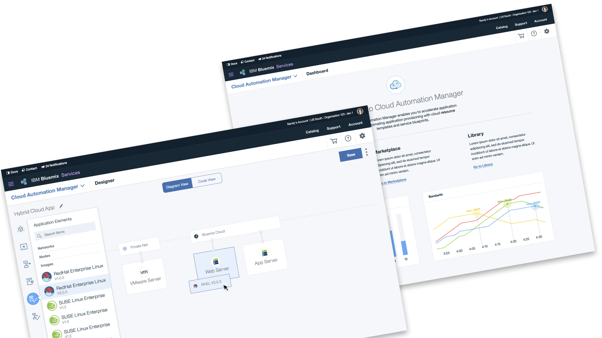
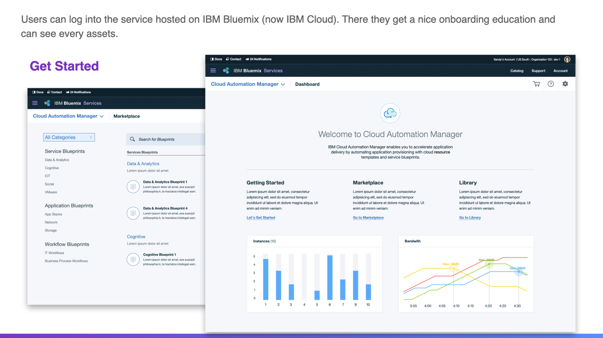

Cloud Automation Manager in IBM Cloud
Break down the siloed process and connect legacy systems with collaborative experience for multi-cloud automation.
About the project
I am among the very first group of designers working on IBM Bluemix (IBM Cloud) and all the 1st party services on the platform. Dating back to 2014, IBM changed its direction to cloud and cognitive computing, which resulted in a couple of significant products, Bluemix and Watson.
I joined in the PureApplication team at first working on softwares that enables easy app orchestration and deployment with PureApp machines. Later as the cloud strategy goes, the team joined a larger discussion on creating a service called Cloud Automation Manager where PureApp and 2 other legacy products work together to provide a seamless, secure and compliant services for multi-cloud. The project is code named "Project Orpheus".

Problem and goals
With the help of Enterprise Design Thinking (then called IBM Design Thinking), whole team kicked off early project goal workshops with a larger group of roles and defined key roles in the new product journey with their own focuses.
The core problems are the breaking connection with different products and the splitted work flow for roles working with them. A lot of manual work and communications are needed to finally deploy an application for certain business.
The 4-walls-long journey map we generated in workshop shed insights on users' top pain points and with research on competitors like RightScale, VMware, we compared all experience touchpoints in lifecycles. Then they are converged into 3 key product goals, internally we call them "Hills".
Ideation and creation
2 teams of designers in US and China worked remotely into several user-story based groups. Using tools like Mural.ly we created virtual to-be journey maps and ideated upon that. Then all the prototypes went on Invision with research team helped out for feedback from sponsor users. Those users are essentially well-connected clients from sales team.
Users don't get to feel the complicated product integration behind Bluemix dashboard and designers' goal is to make them focus on their own responsibility, with the service providing enough support for handing over work and orchestrate flows.
Based on this, we re-imagined experience from lifecycle perspective and worked closely with product line managers to ensure feasibility. Leveraging the early version of Carbon Design Systems, we quickly designed the service from Get started, Everyday use, to Manage and upgrade. In later tests with clients, most felt satisfied with the overall smooth experience in one place.
